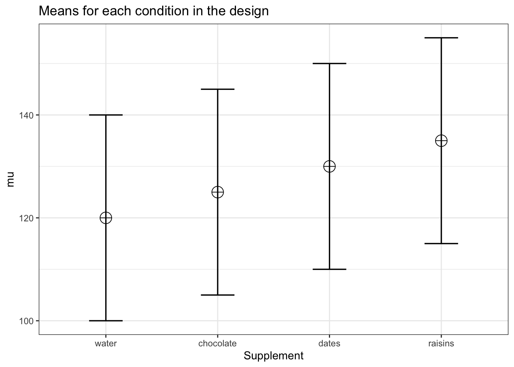
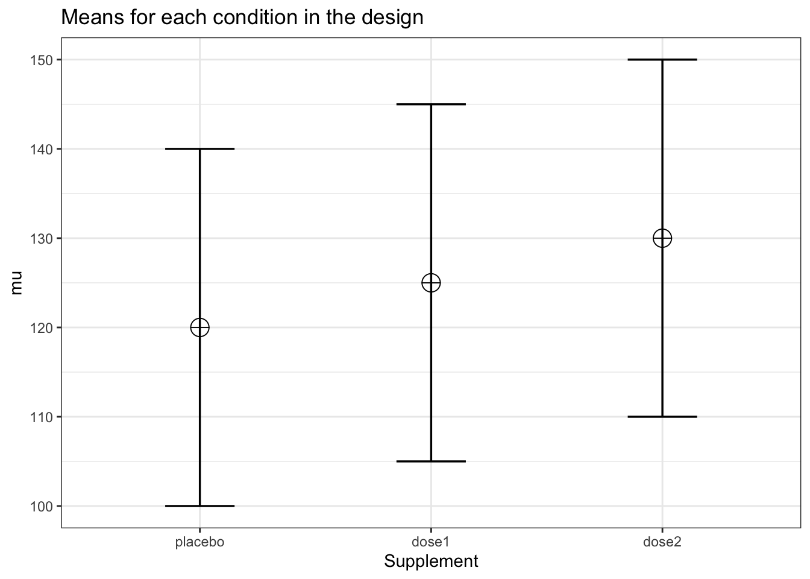
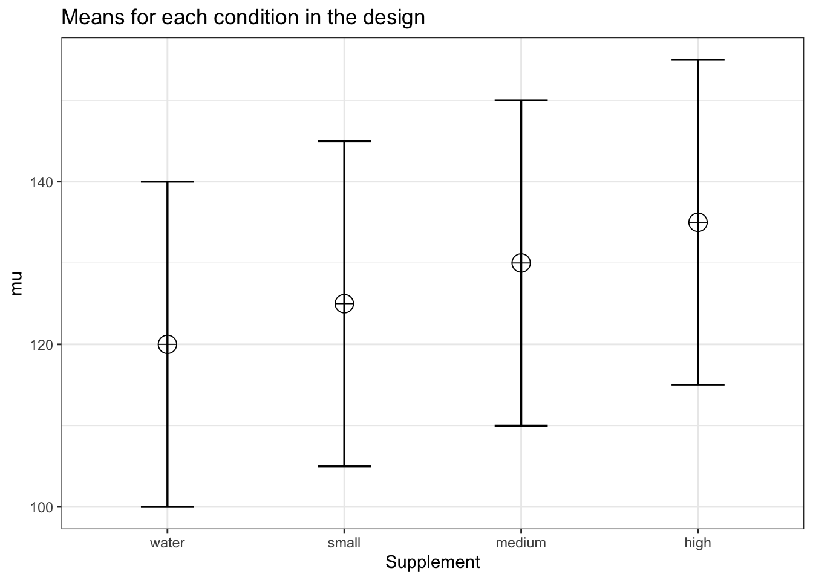
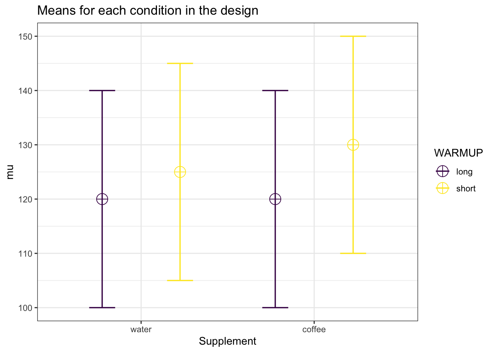
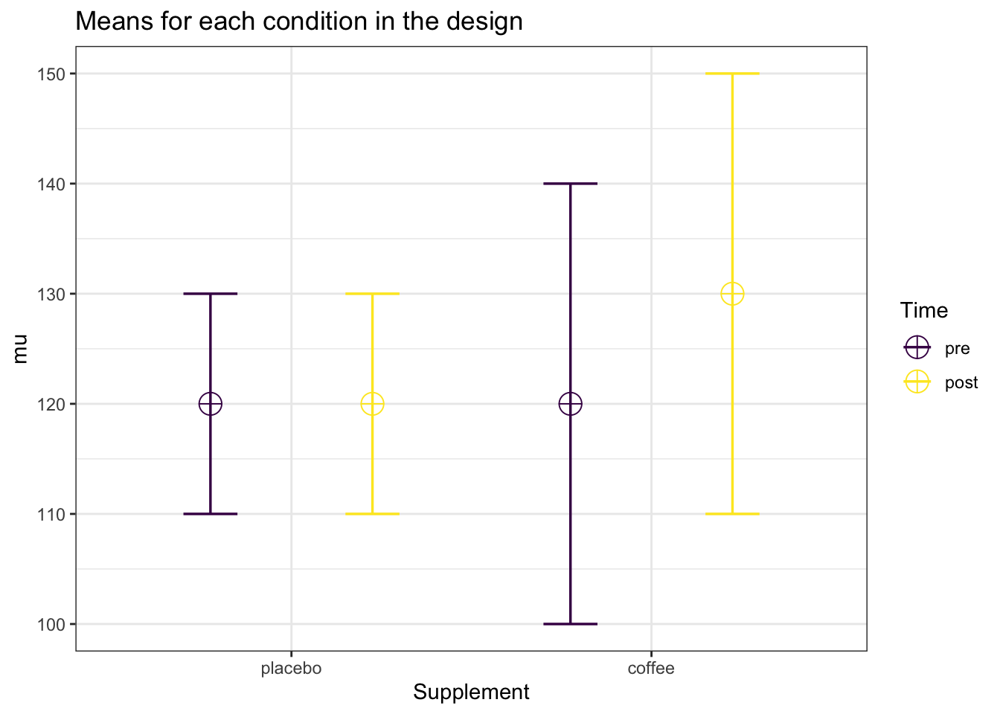
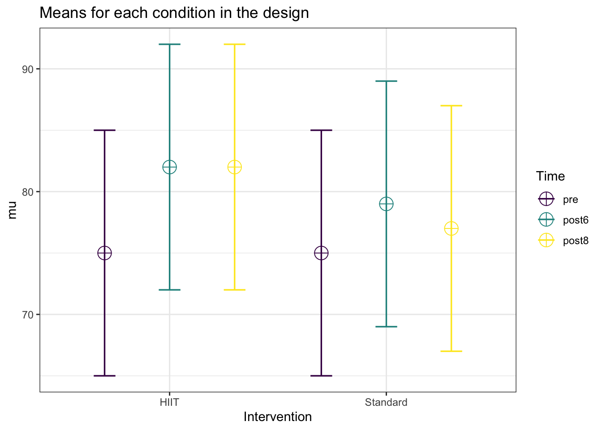
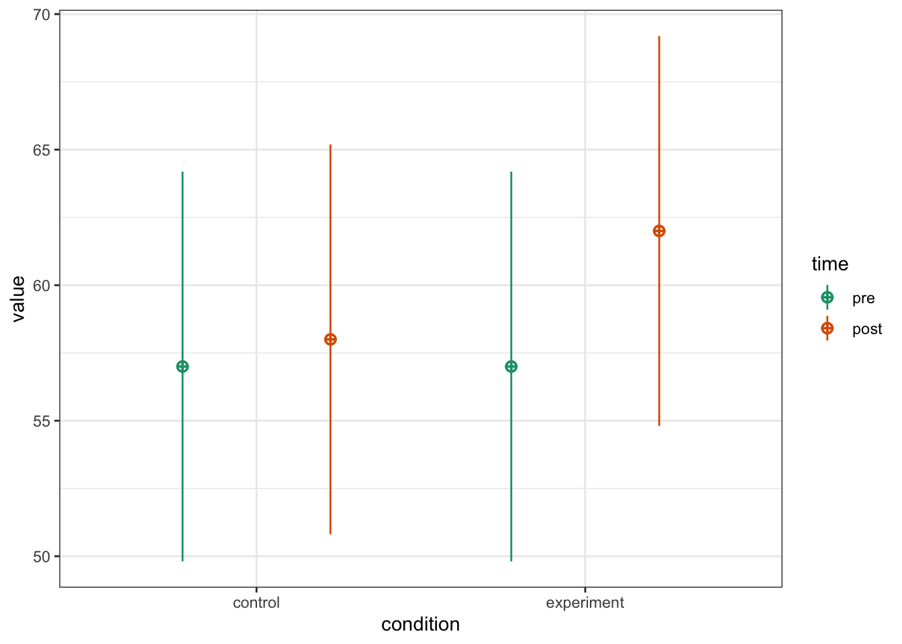
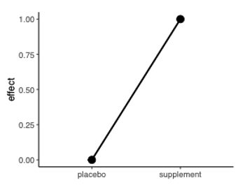
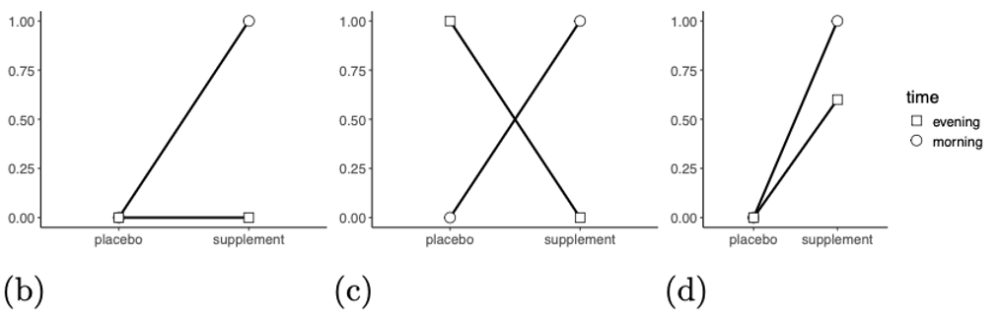
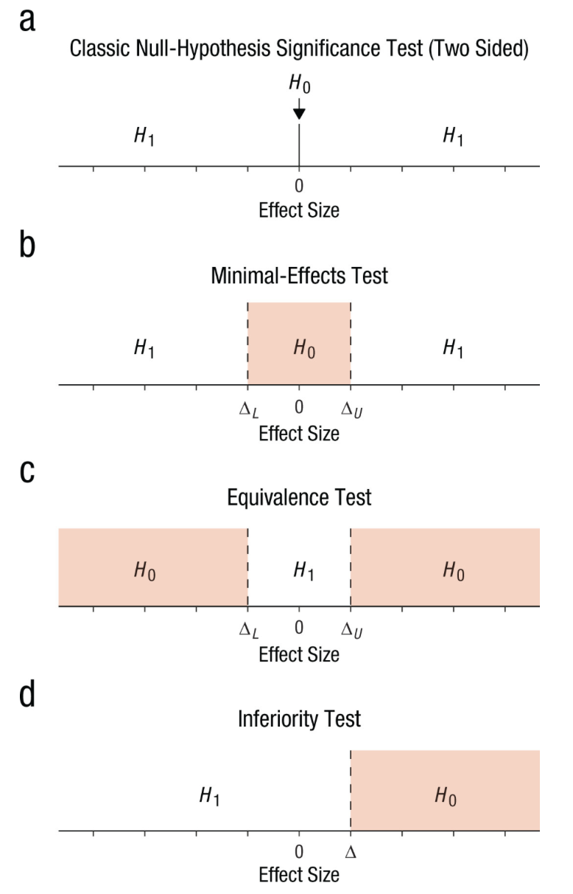

library(MBESS) # account for uncertainity in effect sizes
library(dplyr) # tidy data
library(purrr) # itinerations
library(effectsize) # calculate effect sizes
library(broom) # tidy statistical objects
library(faux) # simulate data for factorial designs
library(pwr) # power analysis for basic designs (eg., t-test)
library(Superpower) # power analysis for factorial design
library(TOSTER) # equivalence tests
library(pwr2ppl) # power analysis for basic designs and logistic regression
library(emmeans) # marginal means and post hoc comparisonsConducting an a priori power analysis
Load packages:
Account for uncertainty and bias when using an published effect size estimate
Suppose we are interested in answering the following research question (RQ):
- Does the consumption of creatine improve power output during a cycling time trial compared to a placebo?
We rely on a published study and assume that the true effect size is similar to the one reported. However, publication bias may inflate reported effects, and many studies are, on average, underpowered.
As a result, there is uncertainty about the true effect size, which should be explicitly accounted for when planning the study.
To address this, we can use the MBESS package to incorporate uncertainty in effect size estimates into the power analysis, leading to more robust sample size justification.
res <- ci.smd(
smd = 0.5,
n.1 = 20,
n.2 = 20,
conf.level = 0.60
)Conduct a power analysis using the lower bound of the 60% CI:
pwr.t.test(
d = res$Lower.Conf.Limit.smd,
power = 0.9,
sig.level = 0.05,
alternative = "greater"
)
Two-sample t test power calculation
n = 335.2629
d = 0.2262542
sig.level = 0.05
power = 0.9
alternative = greater
NOTE: n is number in *each* groupANOVA
In sports and exercise science, factorial designs are common. These designs can be implemented as between-subjects (each participant is assigned to one condition), within-subjects (each participant experiences all conditions), or mixed designs (one factor is between-subjects and the other within-subjects). This structure enables researchers to examine both the main effects of each factor and their interaction effect.
Superpower
Superpower (Caldwell et al. 2022) is an R package (also available as Shiny app) to conduct power analyses. One of the main benefits of Superpower is that it does not require a standardized effect size, in contrast to tools such as G*Power or pwr.
Between-subject ANOVA
Suppose we are interested in testing these three RQs:
Does consuming chocolate affect power output during a time trial compared to water?
Does consuming dates affect power output during a time trial compared to water?
Does consuming raisins affect power output during a time trial compared to water?
Note
Note these are three different RQs (hypotheses) so we do not need to adjust for multiple comparisons
We first begin by setting the parameters to simulate data based on our study design using ANOVA_design():
design_result <- ANOVA_design(
design = "4b",
n = 80,
mu = c(120, 125, 130, 135),
sd = 20, # common standard deviation
labelnames = c("Supplement",
"water", "chocolate", "dates", "raisins"),
plot = TRUE
)
We then use ANOVA_exact to conduct the computation:
res <- ANOVA_exact(
design_result,
alpha_level = 0.05,
emm = TRUE
)Power and Effect sizes for ANOVA tests
power partial_eta_squared cohen_f non_centrality
Supplement 99.2696 0.0733 0.2813 25
Power and Effect sizes for pairwise comparisons (t-tests)
power effect_size
p_Supplement_water_Supplement_chocolate 34.91 0.25
p_Supplement_water_Supplement_dates 88.16 0.50
p_Supplement_water_Supplement_raisins 99.71 0.75
p_Supplement_chocolate_Supplement_dates 34.91 0.25
p_Supplement_chocolate_Supplement_raisins 88.16 0.50
p_Supplement_dates_Supplement_raisins 34.91 0.25
Power and Effect sizes for estimated marginal means
contrast power partial_eta_squared cohen_f
1 Supplement_chocolate - Supplement_dates 35.08 0.0078 0.0889
2 Supplement_chocolate - Supplement_raisins 88.35 0.0307 0.1779
3 Supplement_chocolate - Supplement_water 35.08 0.0078 0.0889
4 Supplement_dates - Supplement_raisins 35.08 0.0078 0.0889
5 Supplement_dates - Supplement_water 88.35 0.0307 0.1779
6 Supplement_raisins - Supplement_water 99.72 0.0665 0.2668
non_centrality
1 2.5
2 10.0
3 2.5
4 2.5
5 10.0
6 22.5res$aov_result Anova Table (Type 3 tests)
Response: y
Effect df MSE F pes p.value
1 Supplement 3, 316 400.00 8.33 *** .073 <.001
---
Signif. codes: 0 '***' 0.001 '**' 0.01 '*' 0.05 '+' 0.1 ' ' 1Power for the effect of Supplement:
res$main_results power partial_eta_squared cohen_f non_centrality
Supplement 99.26959 0.07331378 0.281272 25Power for each of the post hoc comparisons:
res$pc_results power effect_size
p_Supplement_water_Supplement_chocolate 34.90542 0.25
p_Supplement_water_Supplement_dates 88.16025 0.50
p_Supplement_water_Supplement_raisins 99.70604 0.75
p_Supplement_chocolate_Supplement_dates 34.90542 0.25
p_Supplement_chocolate_Supplement_raisins 88.16025 0.50
p_Supplement_dates_Supplement_raisins 34.90542 0.25Because we are not interested in all possible comparisons, we can use specific contrasts with the emmeans package. Since our focus is on comparing each supplement to water, we can set water as the reference group and perform targeted comparisons accordingly.
(comparisons <- emmeans(
res$emmeans$emmeans,
specs = trt.vs.ctrl ~ Supplement,
ref = 4,
))$emmeans
Supplement emmean SE df lower.CL upper.CL
Supplement_chocolate 125 2.24 316 121 129
Supplement_dates 130 2.24 316 126 134
Supplement_raisins 135 2.24 316 131 139
Supplement_water 120 2.24 316 116 124
Confidence level used: 0.95
$contrasts
contrast estimate SE df t.ratio p.value
Supplement_chocolate - Supplement_water 5 3.16 316 1.581 0.2724
Supplement_dates - Supplement_water 10 3.16 316 3.162 0.0050
Supplement_raisins - Supplement_water 15 3.16 316 4.743 <0.0001
P value adjustment: dunnettx method for 3 tests Power for the comparisons of interest:
emmeans_power(comparisons$contrasts) contrast power partial_eta_squared
1 Supplement_chocolate - Supplement_water 35.08293 0.007849294
2 Supplement_dates - Supplement_water 88.35045 0.030674847
3 Supplement_raisins - Supplement_water 99.71885 0.066469719
cohen_f non_centrality
1 0.08894601 2.5
2 0.17789202 10.0
3 0.26683803 22.5Now suppose we are interested the following RQ:
Does the consumption of chocolate milk affect power output during a time trial compared to placebo?
Does the consumption of chocolate milk affect power output during a time trial compared to dates?
design_study <- ANOVA_design(
design = "3b",
n = 20,
mu = c(120, 135, 130),
sd = 20, # common standard deviation
labelnames = c("Supplement",
"placebo", "chocolatemilk", "dates"),
plot = TRUE
)res <- ANOVA_exact(
design_study,
alpha_level = 0.05,
emm = TRUE
)Power and Effect sizes for ANOVA tests
power partial_eta_squared cohen_f non_centrality
Supplement 54.7619 0.0928 0.3199 5.8333
Power and Effect sizes for pairwise comparisons (t-tests)
power effect_size
p_Supplement_placebo_Supplement_chocolatemilk 63.74 0.75
p_Supplement_placebo_Supplement_dates 33.79 0.50
p_Supplement_chocolatemilk_Supplement_dates 12.03 -0.25
Power and Effect sizes for estimated marginal means
contrast power partial_eta_squared
1 Supplement_chocolatemilk - Supplement_dates 12.16 0.0108
2 Supplement_chocolatemilk - Supplement_placebo 64.49 0.0898
3 Supplement_dates - Supplement_placebo 34.28 0.0420
cohen_f non_centrality
1 0.1047 0.625
2 0.3141 5.625
3 0.2094 2.500comparisons <- emmeans(
res$emmeans$emmeans,
specs = ~ Supplement
)contrast <- contrast(
comparisons,
list(rq1 = c(1, 0, -1), # chocolatemilk vs. placebo
rq2 = c(1, -1, 0)) # chocolatemilk vs. dates
)Power of each of the two contrasts:
emmeans_power(contrast) contrast power partial_eta_squared cohen_f non_centrality
1 rq1 64.49287 0.08982036 0.3141404 5.625
2 rq2 12.15715 0.01084599 0.1047135 0.625Now suppose that we are interested in the following RQ:
- Does the consumption of any dose of caffeine affects power output during a time trial in comparison to a placebo?
design_study <- ANOVA_design(
design = "3b",
n = 40,
mu = c(120, 125, 130),
sd = 20, # common standard deviation
labelnames = c("Supplement",
"placebo", "dose1", "dose2"),
plot = TRUE
)
res <- ANOVA_exact(
design_study,
alpha_level = 0.05,
emm = TRUE
)comparisons <- emmeans(
res$emmeans$emmeans,
specs = ~ Supplement
)custom_contrast <- contrast(
comparisons,
list(c1 = c(1, 0, -1), # dose1 vs. placebo
c2 = c(0, 1, -1)) # dose2 vs. placebo
)Power for each of the two contrasts:
emmeans_power(
custom_contrast,
alpha_level = 0.05/2
) contrast power partial_eta_squared cohen_f non_centrality
1 c1 12.85260 0.01057082 0.1033623 1.25
2 c2 48.82994 0.04098361 0.2067246 5.00We adjust \(\alpha\) (i.e., \(\alpha\) divided by the number of comparisons) because we are testing a disjunction hypothesis, meaning we will consider the hypothesis supported if any dose significantly affects power output compared to the placebo.
Within-subject ANOVA
Suppose we are interested in testing the following research question:
- Does increasing doses of caffeine produce a dose–response effect on power output during a time trial, compared with water (placebo)?
design_result <- ANOVA_design(
design = "4w",
n = 30,
mu = c(120, 125, 130, 135),
sd = 20, # common standard deviation
r = 0.7, # common correlation
labelnames = c("Supplement",
"water", "small", "medium", "high"),
plot = TRUE)
res <- ANOVA_exact(
design_result,
alpha_level = 0.05,
emm = TRUE
)comparisons <- emmeans(
res$emmeans$emmeans,
specs = ~ Supplement
)We need to assign a set of contrasts to each condition based on the expected pattern of means. The contrast linear_trend = c(-2, -1, 1, 2) assigns weights to ordered groups to test for a linear increase or decrease across them; the coefficients sum to zero and give progressively larger positive weights to higher levels and negative weights to lower levels.
custom_contrast <- contrast(
comparisons,
list(linear_trend = c(-2, -1, 1, 2))
)Power of the contrast test:
emmeans_power(custom_contrast) contrast power partial_eta_squared cohen_f non_centrality
1 linear_trend 99.96419 0.5136268 1.027635 30.6252x2 within-subject ANOVA
design_result <- ANOVA_design(
design = "2w*2w",
n = 80,
mu = c(120, 125, 120, 130),
sd = 20, # common standard deviation
r = 0.8, # common correlation
labelnames = c("Supplement",
"water", "coffee",
"WARMUP",
"long", "short"),
plot = TRUE)
ANOVA_exact
Using Superpower:::ANOVA_exact to conduct a power analysis performs only a single computation based on the specified parameters, meaning it yields an exact analytic solution for power.
res <- ANOVA_exact(
design_result,
alpha_level = 0.05
)Power for main effects and interaction effect:
res$main_results power partial_eta_squared cohen_f non_centrality
Supplement 69.48206 0.07331378 0.2812720 6.25
WARMUP 100.00000 0.41589649 0.8438159 56.25
Supplement:WARMUP 69.48206 0.07331378 0.2812720 6.25Power for pairwise comparisons:
res$pc_results power
p_Supplement_water_WARMUP_long_Supplement_water_WARMUP_short 93.72723
p_Supplement_water_WARMUP_long_Supplement_coffee_WARMUP_long 5.00000
p_Supplement_water_WARMUP_long_Supplement_coffee_WARMUP_short 99.99997
p_Supplement_water_WARMUP_short_Supplement_coffee_WARMUP_long 93.72723
p_Supplement_water_WARMUP_short_Supplement_coffee_WARMUP_short 93.72723
p_Supplement_coffee_WARMUP_long_Supplement_coffee_WARMUP_short 99.99997
effect_size
p_Supplement_water_WARMUP_long_Supplement_water_WARMUP_short 3.952847e-01
p_Supplement_water_WARMUP_long_Supplement_coffee_WARMUP_long 8.952625e-17
p_Supplement_water_WARMUP_long_Supplement_coffee_WARMUP_short 7.905694e-01
p_Supplement_water_WARMUP_short_Supplement_coffee_WARMUP_long -3.952847e-01
p_Supplement_water_WARMUP_short_Supplement_coffee_WARMUP_short 3.952847e-01
p_Supplement_coffee_WARMUP_long_Supplement_coffee_WARMUP_short 7.905694e-01ANOVA_power
Using Superpower:::ANOVA_power to conduct a power analysis relies on Monte Carlo simulations, meaning it repeatedly generates many random datasets based on the specified design parameters and estimates statistical power as the proportion of simulations in which the effect is detected (i.e., \(p\) < \(\alpha\)).
res_sim <- ANOVA_power(
design_result,
alpha_level = 0.05,
nsims = 1000
)Power for main effects and interaction effect:
res_sim$main_results power effect_size
anova_Supplement 69.3 0.08581276
anova_WARMUP 100.0 0.41655678
anova_Supplement:WARMUP 68.2 0.08214370Power for pairwise comparisons:
res_sim$pc_results power
p_Supplement_water_WARMUP_long_Supplement_water_WARMUP_short 94.4
p_Supplement_water_WARMUP_long_Supplement_coffee_WARMUP_long 4.1
p_Supplement_water_WARMUP_long_Supplement_coffee_WARMUP_short 100.0
p_Supplement_water_WARMUP_short_Supplement_coffee_WARMUP_long 93.8
p_Supplement_water_WARMUP_short_Supplement_coffee_WARMUP_short 93.6
p_Supplement_coffee_WARMUP_long_Supplement_coffee_WARMUP_short 100.0
effect_size
p_Supplement_water_WARMUP_long_Supplement_water_WARMUP_short 0.399153021
p_Supplement_water_WARMUP_long_Supplement_coffee_WARMUP_long 0.004371962
p_Supplement_water_WARMUP_long_Supplement_coffee_WARMUP_short 0.799349954
p_Supplement_water_WARMUP_short_Supplement_coffee_WARMUP_long -0.396502042
p_Supplement_water_WARMUP_short_Supplement_coffee_WARMUP_short 0.402364855
p_Supplement_coffee_WARMUP_long_Supplement_coffee_WARMUP_short 0.7985366622x2 mixed ANOVA
Now suppose we are interested in the following RQ:
- Does a 4-week HIIT training (2 sessions per week) lead to changes in \(VO_{2max}\) at 6 weeks post-intervention?
design_result <- ANOVA_design(
design = "2b*2w",
n = 80,
mu = c(65, 75, 65, 72),
sd = c(10, 10, 20, 20), # assing different SDs
r = 0.8, # common correlation
labelnames = c("Intervention",
"HIIT", "Standard",
"Time",
"pre", "post"),
plot = TRUE)
Power and Effect sizes for ANOVA tests
power partial_eta_squared cohen_f non_centrality
Intervention 9.6356 0.0025 0.0503 0.4
Time 100.0000 0.4225 0.8554 115.6
Intervention:Time 47.0512 0.0223 0.1509 3.6
Power and Effect sizes for pairwise comparisons (t-tests)
power
p_Intervention_HIIT_Time_pre_Intervention_HIIT_Time_post 100.00
p_Intervention_HIIT_Time_pre_Intervention_Standard_Time_pre 5.00
p_Intervention_HIIT_Time_pre_Intervention_Standard_Time_post 79.47
p_Intervention_HIIT_Time_post_Intervention_Standard_Time_pre 97.81
p_Intervention_HIIT_Time_post_Intervention_Standard_Time_post 22.23
p_Intervention_Standard_Time_pre_Intervention_Standard_Time_post 99.83
effect_size
p_Intervention_HIIT_Time_pre_Intervention_HIIT_Time_post 1.58
p_Intervention_HIIT_Time_pre_Intervention_Standard_Time_pre 0.00
p_Intervention_HIIT_Time_pre_Intervention_Standard_Time_post 0.44
p_Intervention_HIIT_Time_post_Intervention_Standard_Time_pre -0.63
p_Intervention_HIIT_Time_post_Intervention_Standard_Time_post -0.19
p_Intervention_Standard_Time_pre_Intervention_Standard_Time_post 0.55Power for main effects and interaction effects:
res$main_results power partial_eta_squared cohen_f non_centrality
Intervention 9.635632 0.002525253 0.05031546 0.4
Time 100.000000 0.422514620 0.85536283 115.6
Intervention:Time 47.051166 0.022277228 0.15094638 3.6Power for the comparison between interventions at week 6:
res$pc_results[5,] power
p_Intervention_HIIT_Time_post_Intervention_Standard_Time_post 22.22751
effect_size
p_Intervention_HIIT_Time_post_Intervention_Standard_Time_post -0.1897367Now suppose we are interested in answering the following RQ:
- Does a 4-week HIIT training (2 sessions per week) lead to changes in \(VO_{2max}\) at 6 and 8 weeks post-intervention?
design_result <- ANOVA_design(
design = "2b*3w",
n = 80,
mu = c(75, 82, 82, 75, 79, 77),
sd = 10,
r = 0.8, # common correlation
labelnames = c("Intervention",
"HIIT", "Standard",
"Time",
"pre", "post6", "post8"),
plot = TRUE)
Power and Effect sizes for ANOVA tests
power partial_eta_squared cohen_f non_centrality
Intervention 43.6787 0.0203 0.1441 3.2821
Time 100.0000 0.3029 0.6592 137.3333
Intervention:Time 99.6569 0.0742 0.2831 25.3333
Power and Effect sizes for pairwise comparisons (t-tests)
power
p_Intervention_HIIT_Time_pre_Intervention_HIIT_Time_post6 100.00
p_Intervention_HIIT_Time_pre_Intervention_HIIT_Time_post8 100.00
p_Intervention_HIIT_Time_pre_Intervention_Standard_Time_pre 5.00
p_Intervention_HIIT_Time_pre_Intervention_Standard_Time_post6 71.04
p_Intervention_HIIT_Time_pre_Intervention_Standard_Time_post8 24.18
p_Intervention_HIIT_Time_post6_Intervention_HIIT_Time_post8 5.00
p_Intervention_HIIT_Time_post6_Intervention_Standard_Time_pre 99.27
p_Intervention_HIIT_Time_post6_Intervention_Standard_Time_post6 47.05
p_Intervention_HIIT_Time_post6_Intervention_Standard_Time_post8 88.16
p_Intervention_HIIT_Time_post8_Intervention_Standard_Time_pre 99.27
p_Intervention_HIIT_Time_post8_Intervention_Standard_Time_post6 47.05
p_Intervention_HIIT_Time_post8_Intervention_Standard_Time_post8 88.16
p_Intervention_Standard_Time_pre_Intervention_Standard_Time_post6 99.99
p_Intervention_Standard_Time_pre_Intervention_Standard_Time_post8 79.78
p_Intervention_Standard_Time_post6_Intervention_Standard_Time_post8 79.78
effect_size
p_Intervention_HIIT_Time_pre_Intervention_HIIT_Time_post6 1.11
p_Intervention_HIIT_Time_pre_Intervention_HIIT_Time_post8 1.11
p_Intervention_HIIT_Time_pre_Intervention_Standard_Time_pre 0.00
p_Intervention_HIIT_Time_pre_Intervention_Standard_Time_post6 0.40
p_Intervention_HIIT_Time_pre_Intervention_Standard_Time_post8 0.20
p_Intervention_HIIT_Time_post6_Intervention_HIIT_Time_post8 0.00
p_Intervention_HIIT_Time_post6_Intervention_Standard_Time_pre -0.70
p_Intervention_HIIT_Time_post6_Intervention_Standard_Time_post6 -0.30
p_Intervention_HIIT_Time_post6_Intervention_Standard_Time_post8 -0.50
p_Intervention_HIIT_Time_post8_Intervention_Standard_Time_pre -0.70
p_Intervention_HIIT_Time_post8_Intervention_Standard_Time_post6 -0.30
p_Intervention_HIIT_Time_post8_Intervention_Standard_Time_post8 -0.50
p_Intervention_Standard_Time_pre_Intervention_Standard_Time_post6 0.63
p_Intervention_Standard_Time_pre_Intervention_Standard_Time_post8 0.32
p_Intervention_Standard_Time_post6_Intervention_Standard_Time_post8 -0.32
Power and Effect sizes for estimated marginal means
contrast power
1 Intervention_HIIT Time_post6 - Intervention_Standard Time_post6 47.05
2 Intervention_HIIT Time_post6 - Intervention_HIIT Time_post8 5.00
3 Intervention_HIIT Time_post6 - Intervention_Standard Time_post8 88.16
4 Intervention_HIIT Time_post6 - Intervention_HIIT Time_pre 100.00
5 Intervention_HIIT Time_post6 - Intervention_Standard Time_pre 99.27
6 Intervention_Standard Time_post6 - Intervention_HIIT Time_post8 47.05
7 Intervention_Standard Time_post6 - Intervention_Standard Time_post8 80.27
8 Intervention_Standard Time_post6 - Intervention_HIIT Time_pre 71.04
9 Intervention_Standard Time_post6 - Intervention_Standard Time_pre 99.99
10 Intervention_HIIT Time_post8 - Intervention_Standard Time_post8 88.16
11 Intervention_HIIT Time_post8 - Intervention_HIIT Time_pre 100.00
12 Intervention_HIIT Time_post8 - Intervention_Standard Time_pre 99.27
13 Intervention_Standard Time_post8 - Intervention_HIIT Time_pre 24.18
14 Intervention_Standard Time_post8 - Intervention_Standard Time_pre 80.27
15 Intervention_HIIT Time_pre - Intervention_Standard Time_pre 5.00
partial_eta_squared cohen_f non_centrality
1 0.0223 0.1509 3.6
2 0.0000 0.0000 0.0
3 0.0595 0.2516 10.0
4 0.3828 0.7876 98.0
5 0.1104 0.3522 19.6
6 0.0223 0.1509 3.6
7 0.0482 0.2250 8.0
8 0.0389 0.2013 6.4
9 0.1684 0.4500 32.0
10 0.0595 0.2516 10.0
11 0.3828 0.7876 98.0
12 0.1104 0.3522 19.6
13 0.0100 0.1006 1.6
14 0.0482 0.2250 8.0
15 0.0000 0.0000 0.0emm_results <- res$emmeans$emmeansCompare HIIT vs Standard at each time point (post6, post8, etc.):
pairwise_results <- emmeans(
emm_results,
pairwise ~ Intervention | Time
)Power of each comparison:
emmeans_power(pairwise_results$contrasts) contrast Time power
1 Intervention_HIIT - Intervention_Standard Time_post6 47.05117
2 Intervention_HIIT - Intervention_Standard Time_post8 88.16025
3 Intervention_HIIT - Intervention_Standard Time_pre 5.00000
partial_eta_squared cohen_f non_centrality
1 2.227723e-02 1.509464e-01 3.600000e+00
2 5.952381e-02 2.515773e-01 1.000000e+01
3 3.169277e-33 5.629633e-17 5.007458e-31Linear model regression with one single dichotomous predictor
The general equation for a linear model is:
\[ y = b_0 + b_1*x_1 + b_2*x_2 + ... + \epsilon \]
We can use this model to simulate data.
Suppose an article investigated the effect of endurance training on \(VO_{2max}\) using a two independent-groups study design.
set.seed(123)
n <- 60 # sample size
# Simulate data
df <- data.frame(
exp = c(rep(0, n/2), rep(1, n/2)),
outcome = c(rnorm(n/2, 58, 8),
rnorm(n/2, 60, 8))
)
# Fit the model
(model <- lm(outcome ~ exp, df) |> tidy())# A tibble: 2 × 5
term estimate std.error statistic p.value
<chr> <dbl> <dbl> <dbl> <dbl>
1 (Intercept) 57.6 1.33 43.3 7.26e-46
2 exp 3.80 1.88 2.02 4.79e- 2In a RCT, the intervention effect corresponds to the estimate of the slope. The standardized effect size estimate ca be expressed as Cohen’s d, which is the mean difference divided by the standard deviation (SD):
(es <- model$estimate[2]/sd(df$outcome))[1] 0.508754This effect size estimate can be used to conduct an a priori power analysis:
pwr.t.test(
power = 0.9,
d = es,
sig.level = 0.05,
type = "two.sample",
alternative = "two.sided"
)
Two-sample t test power calculation
n = 82.16381
d = 0.508754
sig.level = 0.05
power = 0.9
alternative = two.sided
NOTE: n is number in *each* groupWe could use the same model and estimate of the intervention effect to conduct a simulation-based power analysis:
set.seed(123)
n <- 160 # total sample size
exp <- c(rep(0, n/2), rep(1, n/2)) # assign participants to 0 or 1
sd <- sd(df$outcome) # calculate SD
# Write down the equation
outcome <- 55 + 4*exp + rnorm(n, mean=0, sd=sd)
# combine all variables in one data frame
df <- data.frame(exp, outcome)
head(df) exp outcome
1 0 50.80978
2 0 53.27915
3 0 66.65318
4 0 55.52713
5 0 55.96658
6 0 67.82214Fit the ANOVA model:
lm(outcome ~ exp, df) |>
tidy()# A tibble: 2 × 5
term estimate std.error statistic p.value
<chr> <dbl> <dbl> <dbl> <dbl>
1 (Intercept) 55.1 0.782 70.5 2.45e-121
2 exp 3.49 1.11 3.16 1.91e- 3Due to sampling variability, the estimate of the intervention effect will vary from sample to sample. We can perform a simulation-based power analysis to account for this uncertainty (Monte Carlo simulation).
# Create a simulation function
sim1 <- function(effect, n){
exp <- c(rep(0, n/2), rep(1, n/2))
#Simulate the data
outcome <- 55 - effect*exp + rnorm(n, mean=0, sd=sd)
# Fit ANOVA model
res <- tidy(lm(outcome ~ exp))
# Extract the p-value
p_value <- res$p.value[2]
}
# Run the simulation function
p_values <- replicate(1000, sim1(effect = 5, n = 100))
# Count how many p-values are smaller than the alpha level
mean(p_values < 0.05)[1] 0.913In a Monte Carlo simulation, the power of the test is nothing else than the number of p-values that fall below the alpha level.
Linear model regression with one single dichotomous predictor and a baseline covariate
In the morning we saw that including a baseline covariate can boost power. To simulate data for a factorial design, we can use the faux package which allows to easily simulate correlated data.
set.seed(123)
n <- 80
sd <- 7.19
r <- 0.6
# One between-subject factor with two levels
between <- list(condition = c(con = "control", exp = "experiment"))
# One within-subject factor with two levels
within <- list(time = c("pre", "post"))
# Set means
mu <- data.frame(
con = c(57, 58),
exp = c(57, 62),
row.names = within$time
)
# Simulate data
df2 <- sim_design(
within,
between,
n = n,
mu = mu,
sd = sd,
r = r
)
# Fit ANCOVA model
(model <- lm(post ~ condition + pre, df2) |>
tidy())# A tibble: 3 × 5
term estimate std.error statistic p.value
<chr> <dbl> <dbl> <dbl> <dbl>
1 (Intercept) 21.7 3.33 6.52 9.26e-10
2 conditionexp 2.68 0.843 3.18 1.77e- 3
3 pre 0.648 0.0573 11.3 4.74e-22sim2 <- function(n, r){
# One between-subject factor with two levels
between <- list(condition = c(con = "control", exp = "experiment"))
# One within-subject factor with two levels
within <- list(time = c("pre", "post"))
# Set means
mu <- data.frame(
con = c(57, 58),
exp = c(58, 62),
row.names = within$time
)
# Simulate data
df2 <- sim_design(
within,
between,
n = n,
mu = mu,
sd = 8,
r = r,
plot = FALSE
)
# Fit ANCOVA model
model <- lm(post ~ condition + pre, df2) |>
tidy()
# Extract p-value for 'condition'
p_value <- model$p.value[2]
}
# Run the simulation function
p_values <- replicate(1000, sim2(n = 80, r = 0.6))
# Count how many p-values are smaller than the alpha level
mean(p_values < 0.05)[1] 0.912Now let’s rerun the simulation but without including the baseline covariate and let’s compare the statistical power of the design against with the power achieved by the ANCOVA model.
sim3 <- function(n, r){
# One between-subject factor with two levels
between <- list(condition = c(con = "control", exp = "experiment"))
# One within-subject factor with two levels
within <- list(time = c("pre", "post"))
# Set means
mu <- data.frame(
con = c(57, 58),
exp = c(58, 62),
row.names = within$time
)
# Simulate data
df2 <- sim_design(
within,
between,
n = n,
mu = mu,
sd = 8,
r = r,
plot = FALSE
)
# Fit ANCOVA model
model <- lm(post ~ condition, df2) |>
tidy()
# Extract p-value for 'condition'
p_value <- model$p.value[2]
}
# Run the simulation function
p_values <- replicate(1000, sim3(n = 80, r = 0.6))
# Count how many p-values are smaller than the alpha level
mean(p_values < 0.05)[1] 0.873Instead of relying on trial and error to determine the sample size, we can use map_dbl() to run simulations across a range of sample sizes and efficiently estimate the corresponding power for each.
# sequence of sample sizes
n <- seq(30, 120, 10)
# Compute estimated power for each n
power_estimates <- map_dbl(n, function(nsize) {
p_values <- replicate(1000, sim2(n = nsize, r = 0.6))
mean(p_values < 0.05)
})
# Combine results into a data frame
power_df <- data.frame(
n = n,
power = power_estimates
)
power_df n power
1 30 0.524
2 40 0.669
3 50 0.757
4 60 0.797
5 70 0.877
6 80 0.887
7 90 0.944
8 100 0.950
9 110 0.973
10 120 0.985Difference in difference approach to estimate interaction effects
One simple approach to estimate an effect size for an interaction effect is based on the difference-in-difference approach (Sommet et al. 2023); Langenberg et al. (2023)].
knitr::include_graphics("figures/simple_effect.png")
In Figure 1, we would use Equation 1 to estimate a standardised effect size (Cohen’s \(d_s\)) for a two-group design.
\[ d_{s} = \frac{(E - C)}{SD_{pooled}} \tag{1}\]
Using Equation 1, we would obtain a Cohen’s \(d_s\) of:
m1 <- 1 # intervention group mean
m2 <- 0 # control group mean
sd <- 2 # pooled standard deviation
(d <- (m1 - m2)/sd)[1] 0.5A common issue in sports science is the uncritical adoption of effect sizes from previous studies based on simpler designs, which may not align with the factorial structure of the current study when conducting a power analysis for an interaction effect. Whether Cohen’s \(d_s\) is an appropriate estimate of the interaction effect depends on the underlying pattern of means, that is, the type of interaction.
knitr::include_graphics("figures/interaction.png")
Using Equation 2, we can estimate the interaction effect based on the pattern of means observed in a 2 × 2 between-subjects design. This effect size is calculated as a “difference in differences” as follows (Sommet et al. 2023):
\[ d_{int} = \frac{(E_2 - C_2) - (E_1 - C_1)}{(2*SD_{pooled})} \tag{2}\]
For Figure 2 b, the interaction effect (fully attenuated interaction) would be:
E1 <- 0
C1 <- 0
E2 <- 1
C2 <- 0
sd <- 2
((E2 - C2) - (E1 - C1)) / (2*sd)[1] 0.25For Figure 2 c, the interaction effect (crossover interaction) would be:
E1 <- 0
C1 <- 1
E2 <- 1
C2 <- 0
sd <- 2
((E2 - C2) - (E1 - C1)) / (2*sd)[1] 0.5For Figure 2 d, the interaction effect (attenuated interaction) would be:
E1 <- 0.6
C1 <- 0
E2 <- 1
C2 <- 0
sd <- 2
((E2 - C2) - (E1 - C1)) / (2*sd)[1] 0.1Once the interaction effect size has been estimated, we can plug in the estimated Cohen’s \(d_{int}\) into the statistical software. For example:
sample <- pwr.t.test(d = 0.1, power = 0.9, sig.level = 0.05, type = "two.sample", alternative = "two.sided")
sample$n [1] 2102.445We can also use the same in differnce-in-difference approach for factorial within-subject designs (Langenberg et al. 2023). The only difference is that we need to specify the
Equivalence tests
Sports scientists typically aim to reject the null hypothesis of zero (i.e., \(H_0\) =0) to conclude that two interventions differ, or that one is superior or inferior to a standard intervention. However, in some cases, researchers are instead interested in determining whether two interventions are equivalent (Lakens, Scheel, and Isager 2018; Mazzolari et al. 2022). In such situations, an equivalence test must be conducted.
knitr::include_graphics("figures/types_hypothesis.png")
Suppose we are interested in answering the following RQ:
- Is the effect of taking a nap comparable to cryotherapy on force loss after a football match, as measured during an isokinetic knee test?
n <- 30 # sample size
d <- 0.1 # expected mean difference
sd <- 1 # expected standard deviation
low <- - 0.3 # lower bound of the region of equivalence
high <- 0.3 # upper bound of the region of equivalence
type <- "two_sample" # type of test ("one_sample", "two_sample")
power_t_TOST(
n = n,
delta = d,
sd = sd,
low_eqbound = low,
high_eqbound = high,
alpha = 0.05,
type = type
)
TOST power calculation
power = 0.04706003
beta = 0.95294
alpha = 0.05
n = 30
delta = 0.1
sd = 1
bounds = -0.3, 0.3
Important
The closer the effect size (d) is to the equivalence bounds, the lower the statistical power. Both the effect size (d) and the equivalence bounds should be preregistered, and a clear rationale should be provided to avoid using overly wide equivalence margins.
# Create a sequence of sample sizes
n_seq <- seq(50, 250, 25)
# Compute power for each sample size
power_estimates <- map_dbl(n_seq, function(nsize) {
power_t_TOST(
n = nsize,
delta = d,
sd = sd,
low_eqbound = low,
high_eqbound = high,
alpha = 0.05,
type = type
)$power
})
# Combine into data frame
power_df <- data.frame(
n = n_seq,
power = power_estimates
)
power_df n power
1 50 0.2751168
2 75 0.4914904
3 100 0.6236512
4 125 0.7161677
5 150 0.7856387
6 175 0.8389128
7 200 0.8797574
8 225 0.9108524
9 250 0.9343254We can also perform equivalence tests using Superpower. Now suppose we are interested in the following RQ:
- Is the difference in power output between the two doses during a time trial smaller than 0.1?
design_study <- ANOVA_design(
design = "3b",
n = 40,
mu = c(120, 125, 130),
sd = 20, # common standard deviation
labelnames = c("Supplement",
"placebo", "dose1", "dose2"),
plot = TRUE
)
res <- ANOVA_exact(
design_study,
alpha_level = 0.05,
emm = TRUE
)Power and Effect sizes for ANOVA tests
power partial_eta_squared cohen_f non_centrality
Supplement 49.2898 0.041 0.2067 5
Power and Effect sizes for pairwise comparisons (t-tests)
power effect_size
p_Supplement_placebo_Supplement_dose1 19.72 0.25
p_Supplement_placebo_Supplement_dose2 59.81 0.50
p_Supplement_dose1_Supplement_dose2 19.72 0.25
Power and Effect sizes for estimated marginal means
contrast power partial_eta_squared cohen_f
1 Supplement_dose1 - Supplement_dose2 19.84 0.0106 0.1034
2 Supplement_dose1 - Supplement_placebo 19.84 0.0106 0.1034
3 Supplement_dose2 - Supplement_placebo 60.17 0.0410 0.2067
non_centrality
1 1.25
2 1.25
3 5.00comparisons <- emmeans(
res$emmeans$emmeans,
specs = ~ Supplement
)
custom_contrast <- contrast(
comparisons,
list(c3 = c(1, -1, 0)) # dose1 vs. dose2
)emmeans_power(
custom_contrast,
side = "equivalence",
delta = 0.1
) contrast power partial_eta_squared cohen_f non_centrality
1 c3 19.84334 0.01057082 0.1033623 1.25Generalized Linear model regression with one dichotomous outcome
Generalized linear models (GLMs) are a class of statistical models that include more complex models such as logistic regression and Poisson regression. In this context, we will focus on conducting a simulation-based power analysis for logistic regression. Recall that logistic regression is appropriate when the outcome variable is dichotomous, while the predictors can be either continuous or categorical.
set.seed(111)
dep_exp <- 0.3 # expected prob. of depression in EXP group
dep_con <- 0.5 # expected prob. of depression in CON group
n <- 100 # sample size
# Create a dichotomous outcome (1 = depression, 0 = no depression) for the experimental group
exp <- data.frame(
intervention = "exp",
depression = sample(
c(1, 0),
size = n,
replace = TRUE,
prob = c(dep_exp, 1-dep_exp))
)
# Create a dichotomous outcome (1 = depression, 0 = no depression) for the control group
con <- data.frame(
intervention = "con",
depression = sample(c(1, 0), size = n, replace = TRUE, prob = c(dep_con, 1-dep_con))
)
# Combine
df <- bind_rows(exp, con)
# Convert to factors
df$intervention <- factor(df$intervention)
df$depression <- factor(df$depression)
# Contingency table
table(df) depression
intervention 0 1
con 43 57
exp 75 25As shown in the frequency table, the probability of depression (1) is lower in the experimental group and closely matches the true expected probabilities (40% in the experimental group and 50% in the control group).
(res_glm <- glm(depression ~ intervention, df, family = "binomial") |>
tidy())# A tibble: 2 × 5
term estimate std.error statistic p.value
<chr> <dbl> <dbl> <dbl> <dbl>
1 (Intercept) 0.282 0.202 1.40 0.163
2 interventionexp -1.38 0.307 -4.50 0.00000681Convert to odds ratio
exp(res_glm$estimate[2])[1] 0.251462# Create a simulation function
sim5 <- function(dep_exp, dep_con, n){
# Experimental group
exp <- data.frame(
intervention = "exp",
depression = sample(c(1, 0), size = n, replace = TRUE, prob = c(dep_exp, 1-dep_exp))
)
# Control group
con <- data.frame(
intervention = "con",
depression = sample(c(1, 0), size = n, replace = TRUE, prob = c(dep_con, 1-dep_con))
)
# Combine
df <- bind_rows(exp, con)
# Fit logitic model
res <- tidy(glm(depression ~ intervention, df, family = "binomial"))
# Extract the p-value
p_value <- res$p.value[2]
}
# Run the simulation function
p_values <- replicate(
1000,
sim5(dep_exp, dep_con, n = 100)
)
# Count how many p-values are smaller than the alpha level
mean(p_values < 0.05)[1] 0.815LRcat(
p0 = dep_con,
p1 = dep_exp,
prop = .50,
alpha = .05,
power = 0.83
)References
Caldwell, Aaron R., Daniël Lakens, Chelsea M. Parlett-Pelleriti, Guy Prochilo, and Frederik Aust. 2022. Power Analysis with Superpower. https://aaroncaldwell.us/SuperpowerBook/index.html#preface.
Lakens, Daniël, Anne M. Scheel, and Peder M. Isager. 2018. “Equivalence Testing for Psychological Research: A Tutorial.” Advances in Methods and Practices in Psychological Science 1 (2): 259–69. https://doi.org/10.1177/2515245918770963.
Langenberg, Benedikt, Markus Janczyk, Valentin Koob, Reinhold Kliegl, and Axel Mayer. 2023. “A Tutorial on Using the Paired t Test for Power Calculations in Repeated Measures ANOVA with Interactions.” Behavior Research Methods 55 (5): 2467–84. https://doi.org/10.3758/s13428-022-01902-8.
Mazzolari, Raffaele, Simone Porcelli, David J. Bishop, and Daniël Lakens. 2022. “Myths and methodologies: The use of equivalence and non-inferiority tests for interventional studies in exercise physiology and sport science.” Experimental Physiology 107 (3): 201–12. https://doi.org/10.1113/EP090171.
Sommet, Nicolas, David L. Weissman, Nicolas Cheutin, and Andrew J. Elliot. 2023. “How Many Participants Do I Need to Test an Interaction? Conducting an Appropriate Power Analysis and Achieving Sufficient Power to Detect an Interaction.” Advances in Methods and Practices in Psychological Science 6 (3): 25152459231178728. https://doi.org/10.1177/25152459231178728.